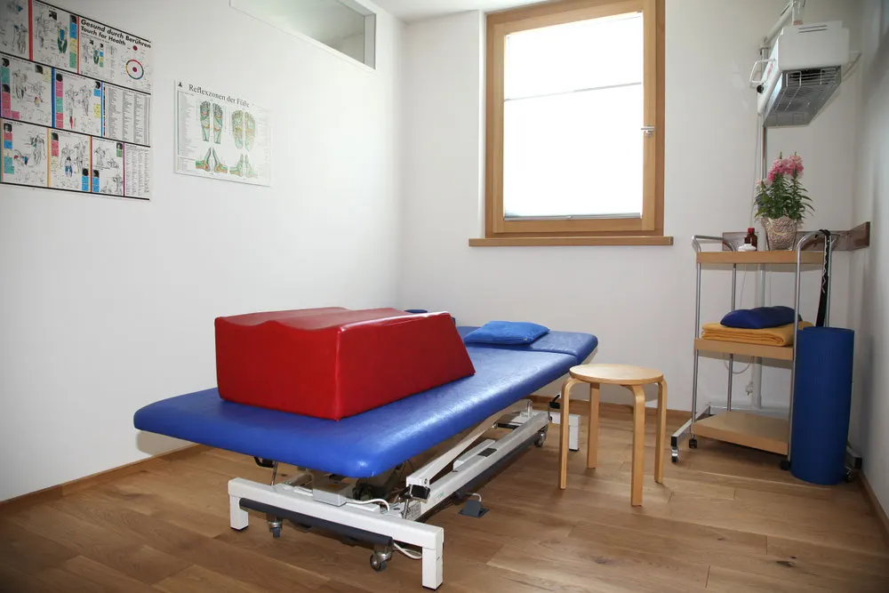
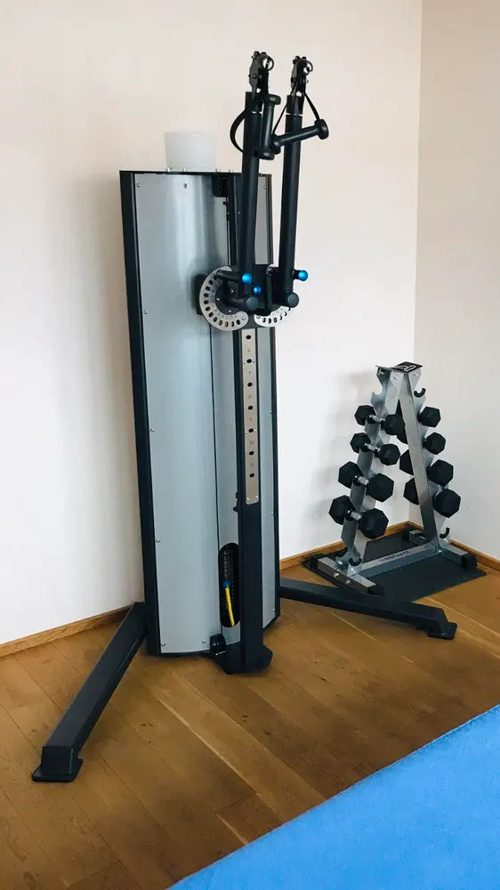

Leistungen
Unsere Therapien im Überblick
Alle Fachbereiche arbeiten bei uns zusammen. So finden wir für Ihre Beschwerden die passende Kombination.
Physiotherapie
Behandlung nach ärztlicher Verordnung, abgestimmt auf Ihre Beschwerden und Ziele.
- Feine Nadel ohne Medikament direkt in den Triggerpunkt
- Löst Verspannungen und fördert die Durchblutung
- Bei Schmerzsyndromen, im Sport und in der Reha
Heilpraktik und Osteopathie
In 50 Minuten behandeln wir orthopädische Beschwerden mit mehreren Methoden zusammen: Chiropraktik, Osteopathie, Trainingstherapie, TCM und Faszientherapie.
- Besonders bei chronischen oder komplexen Beschwerden
- Abrechnung nach Gebührenordnung für Heilpraktiker
Stress Release
Vegetative Behandlung, die Ihr Nervensystem wieder ins Gleichgewicht bringt.
- Bei Anspannung, Schlafproblemen und Konzentrationsschwierigkeiten
- Bei Erschöpfung durch Stress
- Abrechnung nach Gebührenordnung für Heilpraktiker
Ganzheitliche Chiropraktik
Störungen an der Wirbelsäule können das Nervensystem beeinträchtigen. Wir lösen sie, damit Ihr Körper sich wieder selbst regulieren kann.
- Kopf- und Nackenbeschwerden, Schulter und Arm
- Rückenschmerzen, Beschwerden an Beinen und Füßen

Ganzheitliche Chiropraktik
Wann Chiropraktik helfen kann
Unser Ausgangspunkt: Der Körper reguliert und heilt sich selbst, und das Nervensystem steuert dabei alle anderen Organe und Gewebe. Blockaden an der Wirbelsäule können diese Selbstregulation hemmen. Wir lösen sie.
- Kopfschmerz, Migräne, Schwindel
- Nacken-, Schulter- und Armbeschwerden
- Rückenschmerzen, Ischias, Lendenwirbelbeschwerden
- Muskelverspannungen und Mobilitätsverlust
- Schmerzen und Missempfindungen in Beinen, Füßen und Fingern
Auszug aus den Indikationen. Was bei Ihnen in Frage kommt, klären wir im ersten Termin. Termin anfragen

Medizinische Trainingstherapie
Training am Gerät, betreut von Ihrem Therapeuten
Einheiten zu 20, 30 oder 40 Minuten an einem Multifunktionsgerät. Wir arbeiten dabei gezielt an Ihrem Problem. Das ergänzt die manuelle Therapie und Osteopathie und setzt die Krankengymnastik intensiver fort.
- Nach Operationen, zur Wiederherstellung der Funktion
- Gesundheits-, Kraft- und Präventionstraining
- Fitness und Funktionserhalt im Alter
- Sportartspezifisch für Amateur- und Leistungssportler
Ein individuelles Probetraining ist möglich. Probetraining anfragen
Medizinische Therapieliege
Massage, Wärme und Streckung auf einer Liege
Integrierte Massagerollen gleiten über Rücken, Bauch und Beine, so sanft oder stark, wie es Ihnen guttut. Infrarotwärme bereitet verspannte Bereiche vor und lockert die Muskeln. Das ergänzt Ihre Behandlung oder ist ein Programm für sich.
- Streckung der Wirbelsäule in neun Intensitätsstufen
- Punktuelle Wärmebehandlung an Punkten aus der Traditionellen Chinesischen Medizin, mit Moxa-Effekt
- Infrarotprojektor für alle Gelenke
- Lautsprecher auf Kopfhöhe: klassische Musik oder Naturklänge
Sie haben einen kostenlosen Testgutschein? Rufen Sie an (07181 9907607) oder schreiben Sie „Testtermin“ in das Anfrageformular.
Preise und Anwendung
- 10er-Karte
- 100 €
- Einmalige Anwendung
- 15 €
- Dauer
- 30 bis 60 Minuten, je nach Programm
- Häufigkeit
- 1 bis 2 Mal pro Woche oder nach Bedarf
Außerdem
Weitere Angebote
Muskel-Faszien-Therapie
Gezielte Grifftechniken lösen Blockaden, Restriktionen und Verspannungen im gesamten Bindegewebe und stellen die Balance der Strukturen wieder her. Gerne vereinbaren wir einen individuellen Beratungstermin.
Betriebliches Gesundheitsmanagement
Eine gesunde Belegschaft bedeutet ein gesundes und leistungsfähiges Unternehmen. Wir unterstützen Sie dabei, von Prävention bis Rehabilitation.
Vereins-Therapie-Konzept
Wir unterstützen Vereine in freien Kooperationen bei Prävention, Rehabilitation und Leistungsoptimierung.